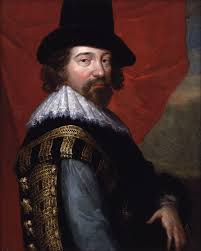
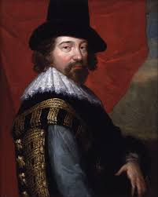

La percibe por medio de hechos, una combinación entre Empirismo y Racionalismo. De acuerdo...
Cusa dice que la verdad no puede ser conocida o poseída por el hombre, ya que excede más allá de las capacidades del conocimiento. En cierta forma estoy de acuerdo porque considero que hay respuestas que el hombre se ha cuestionado y creo que esa verdad o respuesta jamás podrá ser sabida.
Él quería poder decir que las ideas no se podían imponer o aceptar sin más, sino que había algo detrás, un trasfondo sobre el cual se podría explicar el porqué de tal o cual afirmación.
La verdad es todo aquello que pudo haber sido observado desde una perspectiva empírica de la cual a partir de sus resultados se establezca una realidad. Concuerdo ya que el empirismo es la herramienta con la cual dejamos a un lado los dogmas y fundamentamos el porqué de las cosas.
Creía en la verdad divina. Idiosincrática teología católica.
El alma del hombre (y de todas las cosas) son conducidas de una verdad hacia otra hasta llegar al origen, a la unificación con el Logos, es decir, con Dios.
La verdad es cualquier cosa que sea comprobable con un método científico (método científico), o bien, cualquier cosa que se pueda sentir con cualquiera de los cinco sentidos (vista, olfato, tacto, gusto, oír); por lo tanto su método de creencia es empírico, aunque también dogmático ya que también cree en la existencia de un Dios.
La Verdad para él es algo que se descubre, es una búsqueda implacable del ser Humano mismo, lo define como un Viaje entre el Cielo y la Tierra.